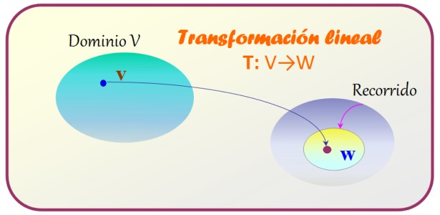
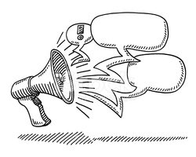
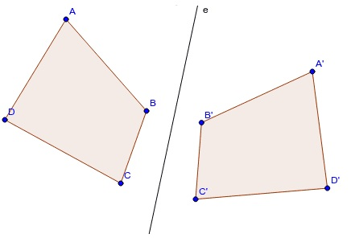

Tabla de contenidos
1. Introducción
Comenzamos a trabajar con la unidad 5. En esta unidad veremos un tipo de función especial. En estas funciones relacionaremos vectores de un espacio vectorial con vectores de otro espacio vectorial (que podría ser el mismo). Y dentro de estas funciones entre espacios vectoriales, que llamaremos transformaciones, en el siguiente libro veremos unas transformaciones que tienen unas características muy particulares.
En este primer libro, trabajaremos con transformaciones entre vectores en general y algunas transformaciones específicas.
2. Transformaciones entre vectores
A lo largo de esta unidad trabajaremos con funciones que asignan a cada vector de un espacio vectorial un único vector de otro espacio vectorial.
Por ejemplo, supongamos que tenemos todos los vectores de \( \mathbb{R}^2\) y a cada vector \( \vec{x, y} \) le asignamos el vector que resulta de sumarle el vector \( \vec{1, 2} \). De esta manera, por ejemplo, al vector \( \vec{-2, 3} \) le corresponde el vector \( \vec{-1, 5} \) y al vector \( \vec{2, -1} \) le corresponde el vector \( \vec{3, 1} \).
Llamaremos Transformaciones a estas funciones que relacionan vectores. Usaremos la letra \( T \) para referirnos a una transformación concreta (pueden ser otras letras mayúsculas, y/o contener un subíndice).
Además, llamaremos dominio al conjunto al que pertenecen los vectores “iniciales” y codominio al conjunto al que pertenecen los vectores que asignamos a cada vector del dominio. Para simbolizar una transformación, diremos el nombre, el dominio y el codominio.
Por ejemplo, si llamamos \( T \) a la transformación del ejemplo anterior, entonces, escribiremos \( T: \mathbb{R}^2 \to \mathbb{R}^2 \). Esto significa que tenemos la transformación \( T \) en la que a cada vector del espacio vectorial \( \mathbb{R}^2 \) (Dominio de \( T \)) se le asigna un único vector del espacio vectorial \( \mathbb{R}^2 \) (Codominio de \( T \)).
En el siguiente esquema mostramos qué es cada parte:
\( \begin{matrix} T&:&\mathbb{R}^2&\to&\mathbb{R}^2 \\ \overbrace{\text{Nombre de la transformación}}& &\overbrace{\text{Dominio}} & &\overbrace{\text{Codominio}} \end{matrix} \)
Para que quede bien definida una trasformación, además de lo anterior, debemos indicar de alguna manera cuál vector del codominio se le asigna a cada vector del dominio. Es decir, algo que permita saber "quién va con quién". Es lo que llamamos ley de correspondencia o regla de asignación.
3. Distintas formas de representación
La forma que tenemos de acceder a los objetos matemáticos es a través de sus representaciones. Por ejemplo, si ahora estuvieras sentado en una silla, el objeto que está debajo tuyo tiene unas características particulares y una utilidad especial. La foto de tu silla, o el dibujo de tu silla o la palabra silla, o una descripción del objeto, no son el objeto. En este caso podemos tener el objeto y las diferentes formas de representarlo.
En el caso de los objetos matemáticos, tenemos su definición, las propiedades que podamos justificar. Y accedemos a través de alguna forma de representarlo.
En lo que sigue, les contamos diferentes maneras de representar una transformación.
3.1. En forma coloquial
Una forma de definir una transformación entre vectores en forma coloquial es como en el ejemplo anterior.
Por ejemplo, definimos la transformación \( T \) que a cada vector \() \begin{pmatrix} x\\ y \end{pmatrix} \) de \( \mathbb{R}^2 \) le asigna el vector que resulta de sumarlo con el vector \begin{pmatrix} 1\\ 2 \end{pmatrix}.
3.2. Mediante fórmula para evaluar
Siguiendo con el mismo ejemplo, una manera de definir la misma transformación puede ser la siguiente:
\( T:\mathbb{R}^2\to\mathbb{R}^2; T\begin{pmatrix} x\\ y \end{pmatrix}=\begin{pmatrix} x+1\\ y+2 \end{pmatrix} \)
Llamaremos imagen del vector \( \begin{pmatrix} x\\ y \end{pmatrix} \) al vector que le corresponde al vector \( \begin{pmatrix} x\\ y \end{pmatrix} \). Lo denotaremos con \( T\begin{pmatrix} x\\ y \end{pmatrix} \). Es decir, \( T\begin{pmatrix} x\\ y \end{pmatrix} \) significa la imagen del vector \( \begin{pmatrix} x\\ y \end{pmatrix} \) según la transformación \( T \).
Así, la imagen de \( \begin{pmatrix} 3\\ 4 \end{pmatrix} \) según \( T \) es \( \begin{pmatrix} 4\\ 6 \end{pmatrix} \). En símbolos, \( T\begin{pmatrix} 3\\ 4 \end{pmatrix}=\begin{pmatrix} 4\\ 6 \end{pmatrix} \). Estos símbolos se leen como la oración anterior.
Para averiguar la imagen de \( \begin{pmatrix} 3\\ 4 \end{pmatrix} \), reemplazamos \( x \) popr \( 3 \) e \( y \) por \( 4 \) en \( T\begin{pmatrix} x\\ y \end{pmatrix}=\begin{pmatrix} x+1\\ y+2 \end{pmatrix} \) y hacemos la cuenta.
3.3. Usando matrices

En algunos casos es posible expresar la relación con matrices y/o vectores.
Por ejemplo, en el caso que venimos trabajando, podemos escribir la relación entre los vectores del dominio y lo de la imagen de la siguiente manera:
\( T:\mathbb{R}^2\to\mathbb{R}^2; T\begin{pmatrix} x\\ y \end{pmatrix}=\begin{pmatrix} x\\ y \end{pmatrix}+\begin{pmatrix} 1\\ 2 \end{pmatrix} \)
Algunos ejemplos de transformaciones definidas usando matrices son:
En el caso de que tengamos una transformación definida con matrices y queramos conocer el vector que el corresponde a un cierto vector del dominio, lo que hacemos es reemplazar en la variable por el vector en cuestión y realizar las operaciones entre las matrices.
4. ¿Cómo hallamos una preimagen?
Si tenemos una transformación \( P \) de cierto dominio, llamémoslo \( \mathbb{V} \), y cierto codomio \( \mathbb{W} \), y tomamos un vector \( Y \) del codomio \( \mathbb{W} \) y queremos saber si hay algún vector \( X \) del dominio \( \mathbb{V} \) cuyo transformado sea \( Y \), ¿cómo hacemos?.
Lo que estamos buscando es una preimagen de \( Y \), si es que existe.
Pensémoslo con un ejemplo, tomemos la transformación \( Q \) anterior y veamos si existe alguna preimagen del vector \( \begin{pmatrix} 1\\0 \end{pmatrix} \). Es decir, buscamos, si existe, algún vector \( \begin{pmatrix} x\\ y\\z \end{pmatrix} \) de \( \mathbb{R}^3 \) tal que su transformado sea \( \begin{pmatrix} 1\\0 \end{pmatrix} \), o sea \( Q\begin{pmatrix} x\\ y\\z \end{pmatrix}=\begin{pmatrix} 1\\0 \end{pmatrix} \).
Un vector posible es \( \begin{pmatrix} 2\\ -3\\-1 \end{pmatrix} \), pues si resolvemos \( \begin{pmatrix} 1 & 1 & 1 \\ 1 & 0 & -1 \end{pmatrix} \cdot \begin{pmatrix} 2\\ -3\\-1 \end{pmatrix}+\begin{pmatrix} 3\\-3 \end{pmatrix} \) da por resultado \( \begin{pmatrix} 1\\0 \end{pmatrix} \).
En el siguiente video el profesor Marcelo busca todas las preimágenes del vector \( \begin{pmatrix} 1\\0 \end{pmatrix} \) por la transformación \( Q \) del apartado 3.3 Usando matrices. Les recomendamos que primero intenten pensarlo ustedes antes de ver el video. ¿Qué deben plantear? ¿Cómo puede resolverse eso que plantean?.
5. Resumen hasta aquí
Hemos hablado de los siguientes conceptos:
- Transformación
- Dominio
- Codominio
- Ley de correspondencia
- Imagen de un vector
- Preimagen de un vector
- Formas de representar una transformación
- Espacios vectoriales
En el siguiente archivo PDF resumimos estas ideas:
6. Algunas transformaciones especiales
Las transformaciones nos permiten, en particular, pensar ciertas transformaciones geométricas. Por ejemplo, las simetrías o las rotaciones.
En el siguiente video el profesor Martín T. introduce la simetría axial en el plano.
Como hemos mencionado, algunas transformaciones pueden ser definidas usando matrices. A continuación, el profesor Daniel nos presenta la rotación en el plano. En este video nos proponemos hallar la matriz genérica de rotación de un ángulo \( \theta \) con respecto al origen de coordenadas en \( \mathbb{R}^2 \).
Profundizaremos sobre estas transformaciones en el siguiente libro.
7. Ejercitación y autoevaluación
Les proponemos que realicen los siguientes ejercicios y problemas.
Como parte de la evaluación continua les proponemos la Autoevaluación sobre transformaciones.Ingresen al cuestionario para ver la fecha de apertura y la de cierre. Esta autoevaluación involucra temas de las últimas dos semanas.
El puntaje que se obtiene en la autoevaluación sólo debe tomarse como un porcentaje de resolución correcta.
Esperamos que para cuando sea el momento de realizar la autoevaluación hayan podido realizar las actividades de práctica, realizado las Consultas, leído los textos y vistos los videos